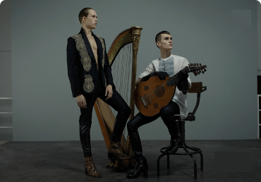

검색결과 총 204개 최신순 최신순 조회순 좋아요순 댓글순 영상 길이순 상세옵션 열기 상세 옵션 상세옵션 초기화 적용하기 프로그램 전체 프로그램명 천재 화가의 불후의 명작 프로그램명 프로그램명 프로그램명 프로그램명 프로그램명 프로그램명 프로그램명 프로그램명 프로그램명 프로그램명 프로그램명 프로그램명 프로그램명 프로그램명 프로그램명 프로그램명 검색결과가 없습니다. 연극 어린 왕자의 순수한 영혼을 연주하고 싶다 한경 ARTE999min 999min 2022.10.20 25 120k 25 연극 어린 왕자의 순수한 영혼을 연주하고 싶다. 한줄 말줄임 테스트 입니다. 한경 ARTE999min 999min 2022.10.20 25 120k 25 연극 어린 왕자의 순수한 영혼을 연주하고 싶다 한경 ARTE999min 999min 2022.10.20 25 120k 25 연극 어린 왕자의 순수한 영혼을 연주하고 싶다 한경 ARTE999min 999min 2022.10.20 25 120k 25 연극 어린 왕자의 순수한 영혼을 연주하고 싶다 한경 ARTE999min 999min 2022.10.20 25 120k 25  연극 어린 왕자의 순수한 영혼을 연주하고 싶다 한경 ARTE999min 999min 2022.10.20 25 120k 25 연극 어린 왕자의 순수한 영혼을 연주하고 싶다 한경 ARTE999min 999min 2022.10.20 25 120k 25 연극 어린 왕자의 순수한 영혼을 연주하고 싶다 한경 ARTE999min 999min 2022.10.20 25 120k 25 연극 어린 왕자의 순수한 영혼을 연주하고 싶다 한경 ARTE999min 999min 2022.10.20 25 120k 25 연극 어린 왕자의 순수한 영혼을 연주하고 싶다 한경 ARTE999min 999min 2022.10.20 25 120k 25 연극 어린 왕자의 순수한 영혼을 연주하고 싶다 한경 ARTE999min 999min 2022.10.20 25 120k 25 연극 어린 왕자의 순수한 영혼을 연주하고 싶다 한경 ARTE999min 999min 2022.10.20 25 120k 25 연극 어린 왕자의 순수한 영혼을 연주하고 싶다 한경 ARTE999min 999min 2022.10.20 25 120k 25 연극 어린 왕자의 순수한 영혼을 연주하고 싶다 한경 ARTE999min 999min 2022.10.20 25 120k 25 연극 어린 왕자의 순수한 영혼을 연주하고 싶다 한경 ARTE999min 999min 2022.10.20 25 120k 25 연극 어린 왕자의 순수한 영혼을 연주하고 싶다 한경 ARTE999min 999min 2022.10.20 25 120k 25 연극 어린 왕자의 순수한 영혼을 연주하고 싶다 한경 ARTE999min 999min 2022.10.20 25 120k 25 연극 어린 왕자의 순수한 영혼을 연주하고 싶다 한경 ARTE999min 999min 2022.10.20 25 120k 25 연극 어린 왕자의 순수한 영혼을 연주하고 싶다 한경 ARTE999min 999min 2022.10.20 25 120k 25 연극 어린 왕자의 순수한 영혼을 연주하고 싶다 한경 ARTE999min 999min 2022.10.20 25 120k 25 처음 이전 1 2 3 4 5 6 7 8 9 10 다음 마지막 더보기 최근 좋아요한 영상 좋은 영상에 좋아요를 해주세요! 연극 어린 왕자의 순수한 영혼을 연주하고 싶다 한경 ARTE 999min 2022.10.20 25 120k 25 연극 어린 왕자의 순수한 영혼을 연주하고 싶다 한경 ARTE 999min 2022.10.20 25 120k 25 연극 어린 왕자의 순수한 영혼을 연주하고 싶다 한경 ARTE 999min 2022.10.20 25 120k 25 연극 어린 왕자의 순수한 영혼을 연주하고 싶다 한경 ARTE 999min 2022.10.20 25 120k 25 연극 어린 왕자의 순수한 영혼을 연주하고 싶다 한경 ARTE 999min 2022.10.20 25 120k 25 연극 어린 왕자의 순수한 영혼을 연주하고 싶다 한경 ARTE 999min 2022.10.20 25 120k 25 연극 어린 왕자의 순수한 영혼을 연주하고 싶다 한경 ARTE 999min 2022.10.20 25 120k 25 연극 어린 왕자의 순수한 영혼을 연주하고 싶다 한경 ARTE 999min 2022.10.20 25 120k 25 연극 어린 왕자의 순수한 영혼을 연주하고 싶다 한경 ARTE 999min 2022.10.20 25 120k 25 연극 어린 왕자의 순수한 영혼을 연주하고 싶다 한경 ARTE 999min 2022.10.20 25 120k 25 연극 어린 왕자의 순수한 영혼을 연주하고 싶다 한경 ARTE 999min 2022.10.20 25 120k 25 연극 어린 왕자의 순수한 영혼을 연주하고 싶다 한경 ARTE 999min 2022.10.20 25 120k 25 연극 어린 왕자의 순수한 영혼을 연주하고 싶다 한경 ARTE 999min 2022.10.20 25 120k 25 연극 어린 왕자의 순수한 영혼을 연주하고 싶다 한경 ARTE 999min 2022.10.20 25 120k 25